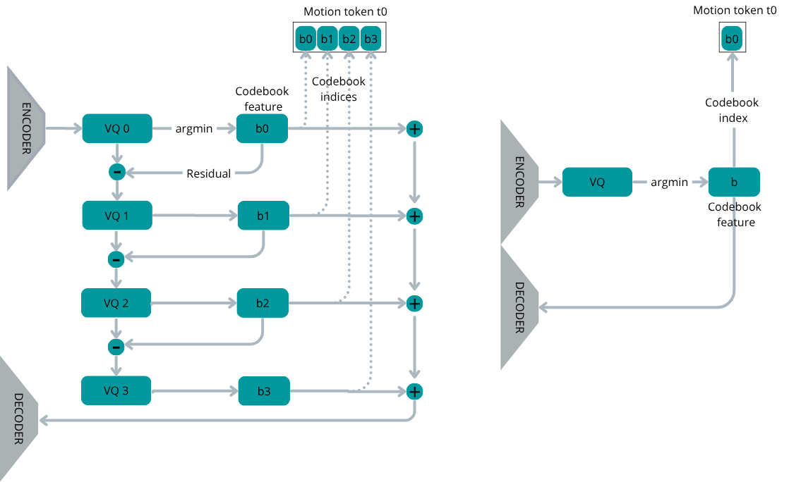

Is the headline comparison fair? Neutral encoder evaluation
The main results table on the home page uses Kimodo's own retrieval encoder (TMR-SOMA-RP), which is what Kimodo's authors report numbers with. That encoder was trained on Kimodo's training distribution, so motions that look like Kimodo's training data score higher on retrieval, regardless of whether they are actually closer to the target caption. This gives Kimodo a built-in home-field advantage that no other system can match. We initially planned to report only those numbers because our proposal targeted Kimodo's benchmark, but the bias means they overstate the gap.
To remove this bias, we re-evaluated both systems with a neutral encoder: TMR-petrovich, the standard text-to-motion encoder used in the broader T2M literature, trained on HumanML3D, a different dataset. Now neither system is at home: any remaining differences reflect actual text-to-motion retrievability, not which model the encoder was trained against. The retrieval protocol is identical for both systems.
The result, shown below: the ~30-point R@3 gap on Kimodo's encoder (58 vs. 88) collapses to a ~2-point gap on the neutral one (9.5 vs. 11.6). Both systems also track the BONES ground truth closely. Most of the apparent quality gap in the headline table was encoder bias, not a real difference in motion quality.
And why does Kimodo edge slightly above the ground truth (R@3 11.6 vs. 11.1)? R@k does not measure motion quality, it measures how easily an encoder can map a motion back to its caption. Real captured motion is messy: a person "walking forward" also breathes, shifts weight, glances around. The neutral encoder, trained on a different dataset (HumanML3D), treats those idiosyncrasies as noise that pushes the motion away from the canonical "walking forward" cluster in its embedding space. Kimodo's generated motion, by contrast, is smoother and closer to the Platonic version of the caption, which is friendlier to retrieval even though it carries less information than the real thing. In other words, Kimodo has learned to produce motion that is more retrieval-friendly than the BONES ground truth itself, an interesting side-effect of training a generative model on caption-aligned data. The takeaway is not that generation beats reality, but that all three systems sit in the same retrievability regime on a neutral encoder, with our system within ~2 R@3 points of the ground truth.
| model | R@1 ↑ | R@3 ↑ | R@5 ↑ | R@10 ↑ | MedR ↓ |
|---|---|---|---|---|---|
| HumanML3D test ceiling | 15.3 | 34.7 | 43.4 | 57.1 | 7 |
| Ground Truth (BONES) | 4.6 | 11.1 | 16.5 | 25.4 | 48 |
| Kimodo-SOMA-SEED-v1.1 | 5.4 | 11.6 | 16.8 | 27.5 | 39 |
| Ours (9L VQ-VAE) | 4.5 | 9.5 | 13.8 | 23.3 | 51 |
R@k: text-to-motion R-Precision at top-k, the fraction of queries whose correct motion is retrieved within the top k (higher is better). MedR: median rank of the correct motion (lower is better), shown in the chart tooltips. The in-distribution HumanML3D test ceiling (R@1 15.3 / R@10 57.1) is omitted from the chart axis so the three close-to-GT systems stay legible.
Could we just inject waypoints into the body GPT?
Before settling on the decoupled controller, we tried three end-to-end ways of feeding waypoints into the body GPT itself.
Each axis is the variant's ratio to the best one on that metric (1.0 = best). Metrics with ↓ are inverted, so bigger polygon = better. Hover for raw values.
- (a) TE-once cross-attn: a Transformer encoder reads all constraints once; the body GPT cross-attends to its output.
- (b) TE-perpos cross-attn: same, but the encoder is re-run at every decoder step.
- (c) Prepend constraint tokens: waypoints tokenised and prepended to the motion sequence.
- (d) Decoupled controller (ours): a GRU rolls out the path; the body GPT receives (x, y, heading) per frame.
(d) dominates every axis; (a) gets close on constraint-following but pays for it on motion quality.
| Architecture variant | Root Err (cm) ↓ | Acc ≤10cm ↑ | Foot Skate ↓ | Jaccard ↑ | m2m R@3 ↑ | m2m R@10 ↑ |
|---|---|---|---|---|---|---|
| (a) TE-once, static cross-attn | 45.12 | 0.344 | 0.528 | 0.337 | 1.27 | 4.20 |
| (b) TE-perpos, relative cross-attn | 52.67 | 0.261 | 0.560 | 0.241 | 1.95 | 4.00 |
| (c) Prepend constraint tokens | 65.17 | 0.268 | 0.526 | 0.367 | 1.07 | 3.61 |
| (d) Decoupled controller (ours) | 17.20 | 0.585 | 0.317 | 0.463 | 3.22 | 8.20 |
How aggressively should the VQ-VAE compress time?
The body VQ-VAE acts as a temporal autoencoder: it compresses a motion clip into a shorter sequence of discrete tokens, and the autoregressive language model is then trained to predict those tokens. Higher temporal compression yields fewer tokens per clip, which lengthens the effective context the language model can attend to and reduces its computational cost, at the price of coarser temporal resolution at the decoder. We study four compression rates: 2x, 4x, 8x and 16x, where a rate of kx means that each token represents k frames of motion. All runs share the same training recipe (codebook of 2048 entries, batch size 512, learning rate 2e-4, window of 64 frames) and are compared at a fixed budget of 100k training iterations.
A rate of 4x gives the lowest reconstruction error and the highest per-clip code diversity, while remaining within the codebook utilisation range of 2x and 8x. We adopt 4x as the body VQ-VAE for the decoupled pipeline. 2x is retained for variants in which the language model benefits from a denser token stream. At 16x the model collapses on reconstruction: with only four tokens per 64-frame clip, the encoder runs out of latent slots before it can capture motion detail.
| compression | frames / token | val recon. loss ↓ | codebook usage ↑ | unique codes / clip ↑ |
|---|---|---|---|---|
| 2x | 2 | 0.073 | 0.683 | 9.8 |
| 4x | 4 | 0.012 | 0.690 | 12.4 |
| 8x | 8 | 0.020 | 0.721 | 7.3 |
| 16x | 16 | 0.117 | 0.705 | 4.0 |

Validation reconstruction loss over training iterations (log scale).
Is the VQ-VAE creating a bottleneck?
We compare two VQ-VAE variants, first on their own (encode a ground-truth clip, decode it back) and then plugged into the body GPT end-to-end. The first answer tells us the ceiling; the second tells us what actually makes it through to the generated motion.
Part 1 · The VQ-VAE on its own
We test two variants of the VQ-VAE in isolation: the single-codebook baseline (one quantizer, one index per frame) and a residual stack of four quantizers, each encoding the error left by the previous one.

Reconstruction quality (VQ-VAE ceiling)
R@3 ↑ (text match, %)
FID ↓ (realism)
| model | Overview | Timeline single | Timeline multi | |||||||||
|---|---|---|---|---|---|---|---|---|---|---|---|---|
| R@3 ↑ | FID ↓ | Skate ↓ | Cont ↑ | R@3 ↑ | FID ↓ | Skate ↓ | Cont ↑ | R@3 ↑ | FID ↓ | Skate ↓ | Cont ↑ | |
| Ground Truth | 93.95 | 0.000 | 2.11 | 1.000 | 90.04 | 0.000 | 2.04 | 1.000 | 94.49 | 0.000 | 1.93 | 1.000 |
| Single VQ-VAE reconstruction | 73.15 | 0.152 | 26.59 | 0.636 | 59.16 | 0.114 | 27.05 | 0.616 | 70.99 | 0.160 | 25.52 | 0.622 |
| RVQ-VAE reconstruction (ours) | 82.48 | 0.076 | 20.75 | 0.721 | 69.75 | 0.055 | 20.97 | 0.713 | 82.69 | 0.076 | 19.75 | 0.719 |
The residual VQ-VAE wins on its own: ~9 points more R@3 on Overview, ~12 on Timeline-multi, half the FID, and ~6 cm/s less foot-skate. The skate gap to the ground truth (~20 vs. ~2) is what motivates the foot-contact re-projection step in our pipeline.
Part 2 · Paired with the body GPT (end-to-end)
Does that advantage carry over once we plug each VQ-VAE into the body GPT? Quadrupling the tokens per frame makes generation harder, and several training recipes for the residual setup did not converge cleanly. The RVQ-GPT we did manage to train underperforms VQ-GPT end-to-end on every metric. Making the residual pay off downstream likely needs a more elaborate design, possibly hierarchical.
Caption: "The person, standing upright, draws their hand back to the right diagonal before throwing the ball diagonally to the left, then stands upright."
VQ-GPT (left) | RVQ-GPT (right)
Caption: "A person standing straight stretches their leg and extends their arms outward, turns left and right, and stands in an upright stance."
VQ-GPT (left) | RVQ-GPT (right)
End-to-end metrics
R@3 ↑ (text match, %)
FID ↓ (realism)
| model | params (M) | latency (ms / clip) ↓ | Overview | Timeline single | Timeline multi | |||||||||
|---|---|---|---|---|---|---|---|---|---|---|---|---|---|---|
| R@3 ↑ | FID ↓ | Skate ↓ | Cont ↑ | R@3 ↑ | FID ↓ | Skate ↓ | Cont ↑ | R@3 ↑ | FID ↓ | Skate ↓ | Cont ↑ | |||
| VQ-GPT (deployed) | 395 | 413 | 58.66 | 0.191 | 33.07 | 0.617 | 47.44 | 0.220 | 27.95 | 0.654 | 37.04 | 0.307 | 27.20 | 0.664 |
| RVQ-GPT (residual variant) | 565 | 486 | 18.74 | 0.644 | 39.24 | 0.481 | 22.18 | 0.411 | 34.93 | 0.507 | 15.12 | 0.670 | 39.08 | 0.468 |
Takeaway. A better VQ-VAE does not automatically give a better generative model. The residual stack wins as a reconstructor but loses as a token target. We keep the single VQ-VAE as our deployed body decoder.
Is the decoding strategy important?
We compare five token-sampling strategies on 25 held-out captions (5 samples each, 200-frame generations).
Each axis is the decoder's ratio to the best one on that metric (1.0 = best). The stuck axis is shown as “non-stuck captions out of 25” so all axes point the same way: bigger polygon = better. Hover for raw values.
The four metrics
- Body motion (mm/frame, ↑): mean root-relative joint velocity, i.e. how much the limbs are moving independently of root translation. Near zero = the character has frozen in place.
- Pose diversity (↑): standard deviation of the local pose over time. High = many distinct poses; low = the same pose held throughout.
- Path length (m, ↑): metres travelled by the root during the clip.
- Stuck captions (out of 25, ↓): number of captions where body motion drops below 5 mm/frame, meaning the character effectively stopped moving while the GPT was still emitting tokens.
Multinomial dominates every axis and is the only decoder that never stands still. Sharpened samplers (top-p + repetition penalty, top-p, top-k) look smooth on locomotion captions but collapse to a held pose on roughly a third, a quarter and an eighth of the captions respectively.
View table| decoder | body motion (mm / frame) ↑ | pose diversity ↑ | path length (m) ↑ | stuck captions ↓ |
|---|---|---|---|---|
| Greedy | 7.09 | 0.017 | 3.56 | 19 / 25 |
| Top-p (nucleus) | 14.64 | 0.040 | 6.56 | 6 / 25 |
| Top-k | 14.86 | 0.046 | 6.50 | 3 / 25 |
| Top-p + repetition penalty | 14.85 | 0.046 | 5.83 | 8 / 25 |
| Multinomial (ours) | 19.67 | 0.058 | 7.80 | 0 / 25 |
Qualitative comparison
Same skeleton, five decoders, five held-out captions. Multinomial (ours) is drawn in red with a star; the others turn grey at the frame they emit end-of-sequence.
"walks backward"
"crouches and walks"
"dances"
"stretches"
"walks while waving"
Sliding-window decode trade-off
At each step the body GPT keeps only the last SW tokens of context. A larger SW lets the model produce longer motions but reaches end-of-sequence sooner; a smaller one keeps generating but starts forgetting its own context. We adopt SW = 25: roughly 290 frames (~10 s) before EOS while limb activity stays near its peak (~21 mm/frame). Multinomial is the only sampler whose limb activity is insensitive to window size; top-p and top-k both lose ~20 % when the window shrinks below 15.

Gen length (left) and limb activity (right) vs. SW. Dashed line marks our chosen SW = 25.

Quantity vs. quality. Multinomial (ours) stays in the high-quality band regardless of window size.
Same metrics as above, swept along SW with the decoder fixed to Multinomial. Each row aggregates 200 generations (10 captions × 20 samples).
| SW | body motion (mm / frame) ↑ | pose diversity ↑ | stuck count (/10) ↓ | path length (m) | gen length (frames) |
|---|---|---|---|---|---|
| 5 | 23.48 | 0.060 | 2 / 10 | 33.83 | 638 |
| 10 | 20.23 | 0.057 | 3 / 10 | 22.46 | 527 |
| 15 | 20.09 | 0.053 | 2 / 10 | 16.75 | 428 |
| 20 | 19.96 | 0.056 | 2 / 10 | 12.37 | 355 |
| 25 ★ | 21.00 | 0.056 | 1 / 10 | 8.74 | 290 |
| 30 | 21.14 | 0.056 | 2 / 10 | 7.75 | 265 |
| 40 | 19.79 | 0.053 | 2 / 10 | 5.54 | 233 |
| 50 (default) | 20.45 | 0.053 | 2 / 10 | 2.71 | 82 |
Small windows produce long but wandering motion (20-35 m in 6.7 s, much of it spurious as the model forgets its own context). The default SW = 50 is too tight: only ~80 frames before EOS. SW = 25 hits the sweet spot, with limb activity at its peak and the stuck count at its minimum.
Fine-grained prompt experiment
We test how well the model handles prompts that combine multiple simultaneous body-part actions. Each level adds one new action — slow walking, right-hand waving, head nodding, left-arm raising — and each of those actions can be generated correctly on its own. However, when combined in a single caption the model starts dropping secondary details at Level 4 and 5: the walking and waving dominate, while nodding and arm-raising are weakened or absent. The text embedding acts as a bottleneck — it preserves the most salient actions but loses the finer-grained ones when there are too many at once.
Level 1
"a person walks"
Level 2
"…walks forward slowly"
Level 3
"…waving the right hand"
Level 4
"…nodding their head"
Level 5
"…raising their left arm"